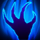
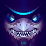
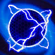
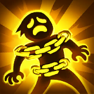
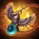
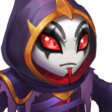
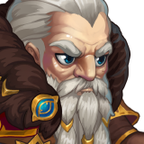
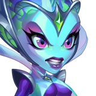

Phobos is a back-line Control Hero from the Way of Eternity. His main strength is disrupting the opposing team's strongest Magic Attack Hero while weakening the rest of the formation.
He combines prolonged paralysis, Energy manipulation, reduced offensive stats, reduced Magic Defense and damage against cursed opponents.
His effectiveness depends on understanding which enemies his abilities target, how his damage scales and which allies can increase the pressure created by his control.
Core strategy: Identify the most dangerous enemy Magic Attack Hero, control that target and use the resulting opportunity to strengthen your team's offensive pressure.
Abilities & mechanics
Phobos — All Four Skills Explained

SKILL 01 · PARALYSIS
Paralysis
Phobos stuns the enemy with the highest Magic Attack for 6.5 seconds, dealing damage every half-second.
While paralyzed, the enemy cannot move or attack.
At the same time, all enemies suffer reduced Physical Attack and Magic Attack for 12 seconds.
Damage scales with Phobos's Magic Attack. While maintaining Paralysis, Phobos cannot use his other Skills.
SKILL 02 · DREADED SHADOW
Dreaded Shadow
Targets the enemy with the highest Magic Attack, reducing that target's Magic Defense for 4 seconds and dealing damage.
Damage scales with Phobos's Magic Attack.
Reduced Magic Defense gives Phobos and allied Magic Heroes an opportunity to increase their offensive pressure.

SKILL 03 · BONDS OF DARKNESS
Bonds of Darkness
Phobos binds himself to the enemy with the highest Magic Attack for 10 seconds.
During the effect, all Energy gained by that target is transferred to Phobos.
This makes it difficult for the target to activate its first Skill while bringing Phobos closer to his own.
Important: This Skill depends on Skill level, not Magic Attack.

SKILL 04 · CURSE MASTER
Curse Master
Whenever a cursed enemy uses a Skill, Phobos deals damage to that enemy.
The more Curses affecting the target, the greater the damage.
Damage scales with Magic Attack.
This effect applies only to enemies who were present at the beginning of battle.
Build consideration: Paralysis, Dreaded Shadow and Curse Master scale their damage with Magic Attack. Bonds of Darkness depends on Skill level.
Phobos relic system
Phobos's Relic — Four Upgrades
Phobos's Relic adds two new abilities and strengthens two of his existing skills. It also raises his Magic Attack and Health at every level.
30Relic levels
+64,542Magic Attack at max level
+215,429Health at max level
2,880Phobos Relic Shards to max

RELIC UPGRADE 1 · NEW SKILL
Chains of Fear
Phobos paralyzes the nearest enemy again and again on a repeating timer, starting a few seconds into the battle.
Core mechanic: Repeating paralysis of the nearest enemy
RELIC UPGRADE 2
Paralysis — Building Damage
Each consecutive hit of Paralysis now deals more damage than the one before. When the effect ends, the enemies around the target are paralyzed as well.
Upgrade: Rising damage · paralysis spreads to nearby enemies
LEGENDARY RELIC · UPGRADE 3
Dreaded Shadow — Stripped Defense
Dreaded Shadow now lowers Magic Defense even further. If the target's Magic Defense reaches zero, it takes bonus damage.
Upgrade: Deeper Magic Defense reduction · bonus damage at zero
LEGENDARY RELIC · UPGRADE 4 · NEW SKILL
Seal of Exhaustion
Shortly after the battle begins, Phobos curses the enemy with the highest Energy. Whenever that enemy reaches maximum Energy, Phobos burns a portion of it.
If the target dies, or once the Curse has triggered, it passes to whichever enemy then has the highest Energy.
Core mechanic: Burns Energy from the enemy with the most
Unlocking the Relic: The first Relic level needs Phobos at 4 stars and level 50. Level 10 needs 6 stars and a higher hero rank, and level 20 needs a higher rank again. The descriptions above come from the game itself; this section is not covered by the video.
Hero development
Phobos — Best Skin Priority
Phobos has six Skins. The recommended order prioritizes damage scaling before defensive improvements.
Solar Skin + Skin+
Magic Attack. The highest priority because it strengthens the damage of his Magic Attack-scaling Skills. Include Skin+ when available.
Illusionist Skin
Magic Attack. Adds more offensive power to his damage-based Skills.
Stellar Skin
Magic Penetration. Helps his magical damage overcome enemy Magic Defense.
Default Skin
Intelligence. Increases Magic Attack and Magic Defense, supporting both offense and survivability.
Winter Skin
Armor. Provides additional protection against Physical Damage.
Dark Depths Skin
Magic Defense. Improves resistance against Magic Damage.
Stat investment & artifact development
Glyphs, Artifacts & Gift of the Elements
Glyphs — Recommended Upgrade Order
Health
Supports survivability, especially during the early and middle stages of development.
Armor
Helps Phobos survive Physical Damage and remain active in battle.
Magic Attack
Increases damage from his Magic Attack-scaling Skills.
Intelligence
Provides both Magic Attack and Magic Defense.
Magic Defense
Supports durability against magical opponents.
Recommended stopping point: Raise these Glyphs to level 40 and stop there unless you are pursuing the Class Skill.

Artifacts — Best Upgrade Order
PRIORITY 01
Artifact Book
Magic Attack + Health
The strongest first investment for Phobos's personal build. Magic Attack improves damage and Health helps him survive long enough to apply control.
PRIORITY 02
Artifact Ring
Intelligence
Strengthens his main stat and the magical attributes associated with it.
PRIORITY 03
Artifact Weapon
Team Magic Defense
Grants Magic Defense to the whole team when Phobos activates his first Skill. It has the lowest priority for his personal build.
ELEMENTAL DEVELOPMENT
Gift of the Elements — Maximize the Investment
Fully upgrade Phobos's Gift of the Elements.
Focus on maintaining both sufficient Health and Magic Attack. Although Phobos operates from the back line, neglecting his durability can cause him to fall before his control Skills provide their full value.
Health helps him remain in combat while Magic Attack increases the damage of his offensive abilities.
Talisman development
Phobos — Both Talismans
TALISMAN 01
Intelligence + Magic Attack
Available in the Eternal Frontier shop for 700,000 Frontier Coins.
Provides additional main-stat development and offensive power.
TALISMAN 02
Armor + Health
Obtained through special events.
A defensive option that improves survival against enemy physical pressure.
Team building
Phobos — Powerful Hero Synergies
These partnerships focus on additional Curses, Magic Defense reduction and control support. They illustrate individual interactions rather than one guaranteed optimal team.
Jorgen — Curse & Control Support
Jorgen can contribute Curse effects that support Phobos's Curse Master.
When a cursed enemy uses a Skill, Curse Master can punish that action with additional damage. Combined with Phobos's Energy manipulation, this creates further pressure on enemy Skill activation.
Key advantage: Additional Curses and control-based disruption.

Faceless — Debuffs & Magic Penetration
Faceless can contribute additional debuffs and Magic Penetration, supporting Phobos's damage and weakening pressure.
Phobos reduces Magic Defense through Dreaded Shadow, creating an opening for allied Magic Heroes.
Key advantage: Additional magical pressure against vulnerable enemies.

Cornelius — Additional Curse Pressure
Cornelius is another Hero capable of contributing Curse effects.
These effects can support Curse Master, increasing opportunities for Phobos to damage cursed targets when they activate Skills.
Key advantage: More opportunities to benefit from Curse-based damage.
Important: Phobos's Paralysis prevents him from using other Skills while the channel is active. His team should be selected with this limitation in mind.
Counters & battle analysis
How to Counter Phobos — Five Approaches
Phobos's control can be dangerous, but his debuffs, Intelligence and back-line positioning also create vulnerabilities. These five examples come from the battle analysis in our video.
COUNTER 01 · DEBUFF PUNISHMENT
Iris — Soul Burning
Iris is a strong answer against teams applying multiple debuffs. Phobos's negative effects can give her additional opportunities to increase the pressure she brings against the enemy.
In this battle, Soul Burning activates as Iris fights alongside Julius, Tempus, Octavia and Nebula.
Watch how the matchup develops around the debuffs affecting the opposing team before and during Soul Burning.
Featured Battle Team
IrisJuliusTempusOctavia

Nebula
Tactical advantage: Turn the enemy's debuffs into an opportunity for Iris to apply additional pressure.
COUNTER 02 · INTELLIGENCE TARGETING
Cornelius — Heavy Wisdom
Heavy Wisdom targets the enemy with the highest Intelligence.
If Phobos has the highest Intelligence on his team and his Armor is low or average, Cornelius can potentially defeat him with a single powerful hit.
The battle features Cornelius alongside Iris, Guus, Electra von Grave and Nebula against a formation including Phobos.
Featured Battle Team
CorneliusIrisGuusElectra von GraveNebula
Tactical check: Confirm that Phobos actually has the highest Intelligence before depending on Heavy Wisdom.
COUNTER 03 · FURTHEST ENEMY
Jhu — Back-Line Pressure
Jhu becomes a strong option when Phobos occupies the furthest position in the opposing formation.
The featured battle shows Jhu alongside Yasmine, Wodryn, Byrna and Guus.
During the extended fight, You Will Not Stop Me appears while the team continues applying pressure. The important interaction is the ability to threaten the furthest target over time.
Featured Battle Team
JhuYasmineWodrynByrnaGuus
Tactical advantage: When Phobos is the furthest target, Jhu can turn that positioning into a weakness.
COUNTER 04 · LOWEST-HEALTH TARGET
Kendle — Lava Kiss
Kendle can threaten Phobos when he becomes the enemy with the lowest Health.
Lava Kiss initially deals Magic Damage before continuing with Pure Damage while Kendle remains above the required Health threshold. The Skill ends when its target is defeated.
The featured battle uses Kendle alongside Crow, Kayla, Dorian and Aidan.
The critical moment comes when a vulnerable enemy becomes the lowest-Health target at the time of activation.
Featured Battle Team
KendleCrowKaylaDorianAidan
Important distinction: Lava Kiss targets the lowest-Health enemy, not automatically the furthest enemy.
COUNTER 05 · FURTHEST ENEMY MARKING
Eva — Focusing Scope
Eva offers another way to pressure Phobos when he occupies the furthest enemy position.
Focusing Scope targets and marks the furthest enemy, allowing allied Marksmen to share some of their damage with that target while attacking other enemies.
The featured battle includes Eva, Cascade, Julius, Judge and Nebula. Impossible Shot appears during the action, while Focusing Scope provides a separate mechanism to threaten the enemy back line.
Featured Battle Team
EvaCascadeJuliusJudgeNebula
Tactical advantage: A furthest-position mark can expose Phobos to damage shared by allied Marksmen.
Counter summary: Iris punishes debuffs, Cornelius threatens Intelligence-based targets, Jhu applies back-line pressure, Kendle focuses low-Health targets, and Eva can mark the furthest enemy.
Final assessment
Final Verdict — Is Phobos Worth Building?
A Specialized Controller Against Magic Teams
Phobos is particularly valuable against teams that rely heavily on a powerful Magic Attack Hero.
His Paralysis can neutralize a key opponent while reducing the offensive attributes of the entire enemy team. Bonds of Darkness disrupts Energy generation, Dreaded Shadow weakens Magic Defense, and Curse Master punishes cursed opponents when they use Skills.
Build him with sufficient Health and Armor to survive, while developing Magic Attack to improve his damage-based abilities.
Support him with suitable Curse, debuff and Magic-oriented allies, but always consider his vulnerabilities to debuff punishment, Intelligence targeting and back-line pressure.
GOA recommendation: Phobos is a strategic Control Hero, not a universal answer to every formation. His value depends on the matchup, enemy stats and positioning.
Video guide & battle testing
Watch — Phobos Full Hero Guide
Watch our complete analysis, including skill explanations, upgrade recommendations and the featured counter battles.
Knowledge. Precision. Control.
Discover more Hero Wars Alliance guides, strategies and detailed Hero analysis.